With this lecture: I Dreamed a Dream (a planner's lament)
Contents · 18 slides
- Urban Planning Modernism
- The Garden City
- Garden City Design
- Magnets and Needles
- Letchworth Garden City
- The Fate of the Garden City
- Le Corbusier
- Le Corbusier’s Paris
- Abstraction
- Repetition
- The Worker Transformed into a Machine
- The Spirit of Man
- Frank Lloyd Wright
- Eliminate the City!
- Conflicting Visions
- Conflicting Visions
- Not a Humble Plan!
- The Only Part of the Plan Realized
1 Urban Planning Modernism
- Howard, Le Corbusier, Wright
2 The Garden City
- Ebenezer Howard
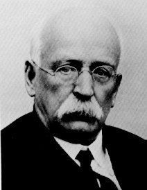
3 Garden City Design
- Looks good from God’s eye view!
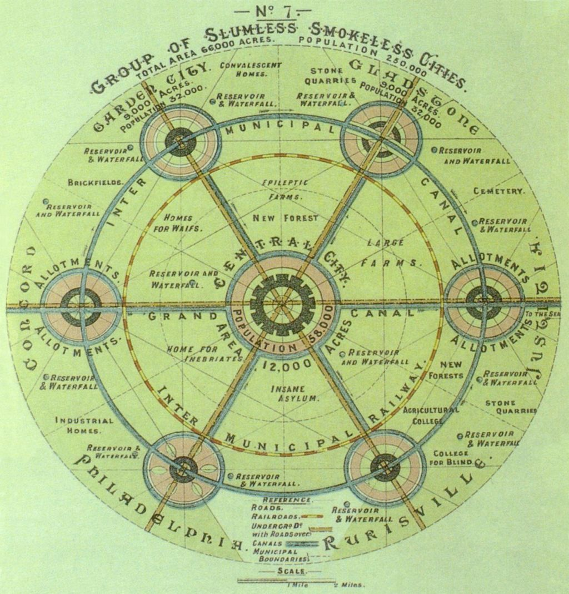
4 Magnets and Needles
- Howard uses a metaphor from inorganic life.
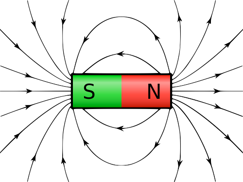
5 Letchworth Garden City
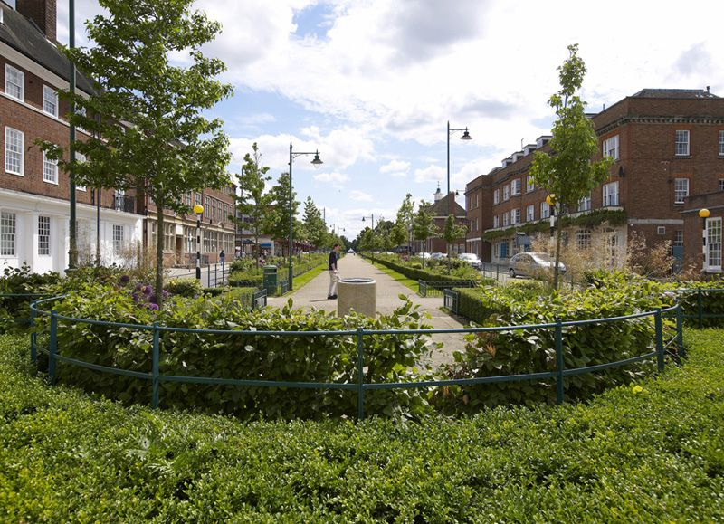
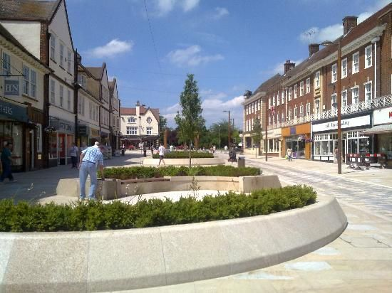
6 The Fate of the Garden City
- “Today there are many garden cities in the world, but most of them have devolved to dormitory suburbs, which completely differ from what Howard aimed to create.” — Wikipedia, “Garden city movement” (2013)
7 Le Corbusier
- A Contemporary City
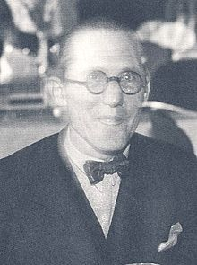
8 Le Corbusier’s Paris
- “The despot is not a man. It is the Plan.” — Le Corbusier, The Radiant City (1935), p. 154, quoted in Scott, Seeing Like a State (1998), p. 112
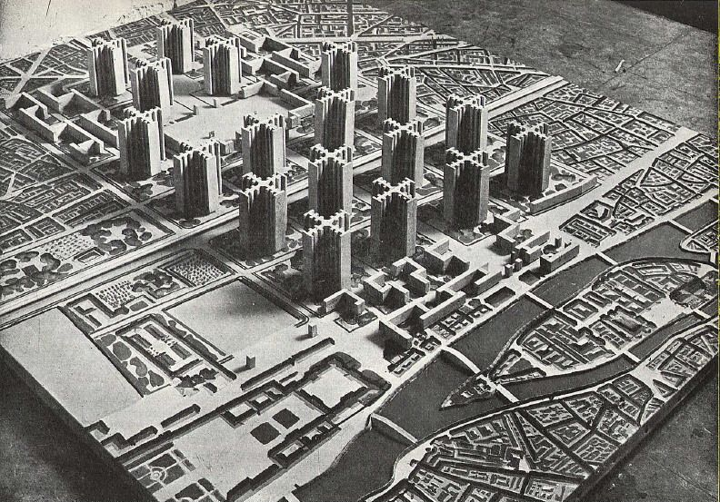
9 Abstraction
- “The lay-out must be of a purely geometrical kind...” — Le Corbusier, The City of To-morrow and Its Planning (1929)
10 Repetition
- “The result of repetition is a standard, the perfect form...” — Le Corbusier, The City of To-morrow and Its Planning (1929)
11 The Worker Transformed into a Machine
- “The spirit of the mason must be disciplined by making him part of the severe and exact machinery of the industrialized builder’s yard.” — Le Corbusier, The City of To-morrow and Its Planning (1929)
12 The Spirit of Man
- “the mark of the human brain at work” — Le Corbusier, The City of To-morrow and Its Planning (1929): But what really pleases Le Corbusier is that the city shows the mark of a single brain at work: his, the planner’s!
13 Frank Lloyd Wright
- Broadacre City
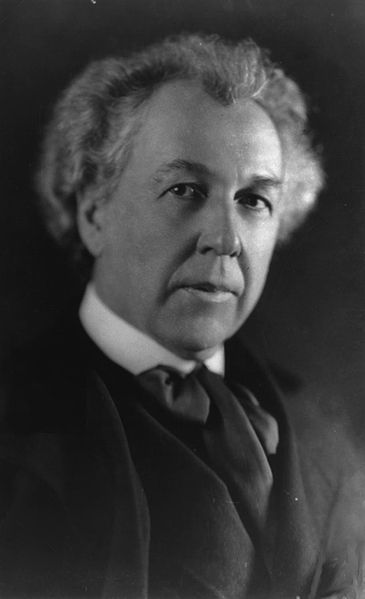
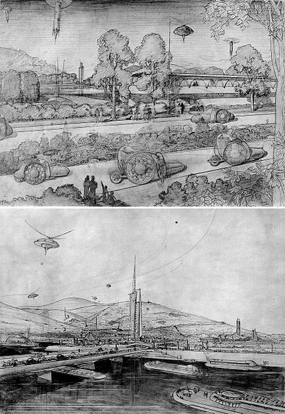
14 Eliminate the City!
- Thus “the present curse of petty and minor officialdom, government, has been reduced to one minor government for each county.” — Frank Lloyd Wright, “Broadacre City: A New Community Plan” (1935)
15 Conflicting Visions
- Does Wright want central direction or not?
- “In the hands of the state… is all redistribution of land—a minimum of one acre going to the childless family… the agent of the state in all matters of land allotment or improvement, or in matters affecting the harmony of the whole, is the architect... All public utilities are concentrated in the hands of the state… as are matters of administration, patrol, fire, post, banking, license and record... In the buildings of Broadacres no distinction exists between much and little... Quality is in all, for all, alike.” — Frank Lloyd Wright, “Broadacre City: A New Community Plan” (1935)
16 Conflicting Visions
- Does Wright want central direction or not?
- BUT: “Nor does Broadacres issue any dictum or see any finality in the matter either of pattern or style.” — Frank Lloyd Wright, “Broadacre City: A New Community Plan” (1935)
17 Not a Humble Plan!
- “There are too many details involved in the model of Broadacres to permit complete explanation.” — Frank Lloyd Wright, “Broadacre City: A New Community Plan” (1935)
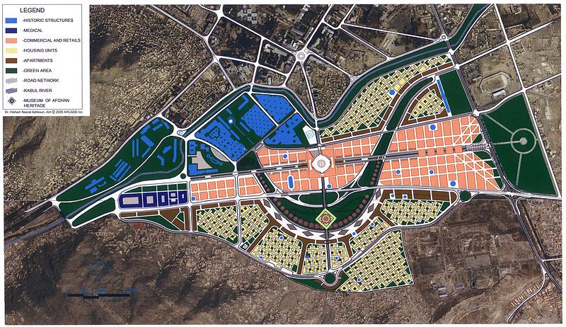
18 The Only Part of the Plan Realized
- A single gas station in Minnesota.
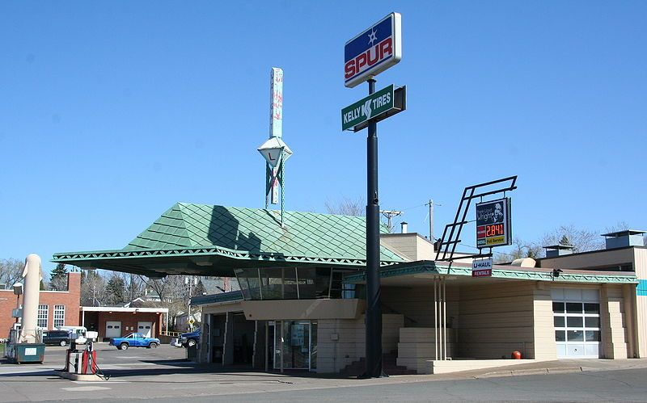